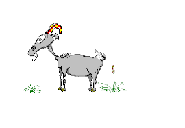
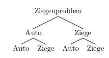
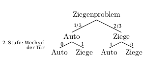
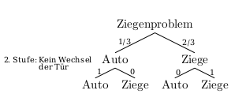

5.2 Abschlussquizshow
Überraschend bist du statt in einer Mathestunde in einer Quizshow gelandet. Du hast die einmalige Gelegenheit ein virtuelles Auto zu gewinnen! Wenn’s schief geht, musst du dich allerdings ab jetzt um eine virtuelle Ziege kümmern. So ist das im Leben manchmal.

Du hast die Wahl zwischen drei Türen. Hinter einer Türe verbirgt sich ein Auto, hinter den beiden anderen wartet jeweils eine Ziege auf dich. Du darfst nun im ersten Schritt eine Tür wählen. Noch bleibt diese Türe geschlossen.
Allerdings bekommst du einen Tipp: Eine der beiden anderen Türen öffnet sich und zeigt dir eine Ziege. Jetzt hast du die Wahl: Bleibst du bei deiner Türwahl oder wechselst du zur anderen Tür?
Aufgabe 1
Was glaubst du: Erhöhst du deine Chance auf das Auto durch einen Türwechsel? Oder sind die beiden verbleibenden Türen gleich wahrscheinlich?
Notiere deine Überlegungen.
Aufgabe 2
Probiere es aus. Und zwar oft. Also mindestens 100 Mal.
Aufgabe 3
Was glaubst du jetzt: Erhöhst du deine Chance auf das Auto durch einen Türwechsel? Oder sind die beiden verbleibenden Türen gleich wahrscheinlich?
Notiere deine Beobachtungen und Überlegungen.
Auflösung
Vermutlich bist du auch zu dem Schluss gekommen, dass ein Wechsel der Tür die Wahrscheinlichkeit für einen Autogewinn erhöht. Aber warum ist das so?
Aufgabe 4
Erfasse die Situation in einer Tabelle, um eine Übersicht über die Möglichkeiten zu erhalten. Wie können die Ziegen und das Auto auf die drei Türen verteilt sein?
| Übersicht | Tür 1 | Tür 2 | Tür 3 |
|---|---|---|---|
| \(\quad\quad\) Möglichkeit 1 | |||
| \(\quad\quad\) Möglichkeit 2 | |||
| \(\quad\quad\) Möglichkeit 3 |
| Übersicht | Tür 1 | Tür 2 | Tür 3 |
|---|---|---|---|
| \(\quad\quad\) Möglichkeit 1 | \(\quad\quad\) Auto | \(\quad\quad\) Ziege | \(\quad\quad\) Ziege |
| \(\quad\quad\) Möglichkeit 2 | \(\quad\quad\) Ziege | \(\quad\quad\) Auto | \(\quad\quad\) Ziege |
| \(\quad\quad\) Möglichkeit 3 | \(\quad\quad\) Ziege | \(\quad\quad\) Ziege | \(\quad\quad\) Auto |
Aufgabe 5
- Zähle mit Hilfe der in Aufgabe 3 erstellten Tabelle, wie oft du bei einem Wechsel gewinnst bzw. verlierst. Protokolliere deine Ergebnisse mit Hilfe einer Strichliste in folgender Übersichtstabelle:
| Strichliste | Auto gewinnen | Ziege versorgen |
|---|---|---|
| Wechseln | ||
| Bleiben |
Betrachte die Tabelle, gehe sie systematisch durch und überlege jedesmal, ob du bei einem Wechsel gewinnst oder verlierst.
| Übersicht | Tür 1 | Tür 2 | Tür 3 |
|---|---|---|---|
| \(\quad\quad\) Möglichkeit 1 | \(\quad\quad\) Auto | \(\quad\quad\) Ziege | \(\quad\quad\) Ziege |
| \(\quad\quad\) Möglichkeit 2 | \(\quad\quad\) Ziege | \(\quad\quad\) Auto | \(\quad\quad\) Ziege |
| \(\quad\quad\) Möglichkeit 3 | \(\quad\quad\) Ziege | \(\quad\quad\) Ziege | \(\quad\quad\) Auto |
Hier ein Beispiel:
Stell dir vor der Kandidat wählt Tür 1: Nun gibt es drei Möglichkeiten, wie die Ziegen und das Auto verteilt sein könnten. Wenn sie wie in Möglichkeit 1 verteilt sind und der Kandidat wechselt, verliert er das Auto und muss die Ziege versorgen. Bleibt er dagegen bei seiner Wahl, gewinnt er in diesem Fall das Auto. Du protokollierst also folgende Striche:
| Strichliste | Auto gewinnen | Ziege versorgen |
|---|---|---|
| Wechseln | \(\quad\) l | |
| Bleiben | \(\quad\) l |
Natürlich bist du noch nicht fertig. Der Kandidat hat Tür 1 gewählt. Was passiert, wenn die Ziegen und das Auto wie in Möglichkeit 2 verteilt sind? Und wenn sie wie in Möglicheit 3 verteilt sind?
Wenn du Tür 1 abgearbeitet hast, geht es mit Tür 2 und Tür 3 weiter.
| Strichliste | Auto gewinnen | Ziege versorgen |
|---|---|---|
| Wechseln | \(\quad\) llllll | \(\quad\) lll |
| Bleiben | \(\quad\) lll | \(\quad\) llllll |
- Wie groß ist also die Wahrscheinlichkeit bei einem Wechsel zu gewinnen? Und wie groß ist sie, wenn man sich gegen den Wechsel entscheidet?
Im Falle eines Wechsels gewinnt man in sechs von neun Fällen. Das heißt die Wahrscheinlichkeit zu gewinnen ist \(P(Gewinn\;bei\;Wechsel) = \frac{6}{9} = \frac{2}{3}\).
Entscheidet man sich gegen einen Wechsel gewinnt man nur in drei von neun Fällen. Die Wahrscheinlichkeit zu gewinnen, wenn man sich gegen einen Wechsel entscheidet ist also: \(P(Gewinnen\;ohne\;Wechsel) = \frac{3}{9} = \frac{1}{3}\)
Aufgabe 6
Wie sieht die Lösung der Aufgabe aus, wenn man ein Baumdiagramm zeichnet? Versuch’s einmal.
- Zeichne ein zur Situation passendes Baumdiagramm.

Welche Wahrscheinlichkeiten musst du nun noch an die Pfade schreiben?
Mache dir klar, dass die Wahrscheinlichkeiten in der zweiten Stufe davon abhängen, ob du dich für einen Wechsel entscheidest oder nicht. Du musst also zwei Baumdiagramme erstellen!
Eines mit den Wahrscheinlichkeiten für den Fall, dass es du wechselst und eines mit den Wahrscheinlichkeiten, für den Fall, dass du nicht wechselst.
- So sieht das Baumdiagramm für den Fall aus, dass man sich nach Öffnen der Türe durch den Quizmaster für einen Wechsel entscheidet:

Hat man sich in der ersten Spielrunde zufälligerweise richtig (für die Tür, hinter der das Auto steht) entschieden, so geht man nach einem Wechsel leer aus - die Wahrscheinlichkeit für das Auto ist in dieser zweiten Stufe nun 0. Man erhält also sicher (das heißt mit einer Wahrscheinlichkeit von 1) die Ziege.
Hat man sich aber zunächst für die Ziege entschieden, so gewinnt man nach dem Wechsel das Auto.
- Entsprechend sieht das Baumdiagramm für den Fall, dass man sich nach dem Öffnen der Türe durch den Quizmaster gegen eine Wechsel der Tür entscheidet, so aus:

- Berechne die Wahrscheinlichkeiten mit Hilfe der Baumdiagramme.
1. Fall: Man entscheidet sich für einen Wechsel der Tür:
Hier ist also folgendes Baumdiagramm relevant:
Wie immer muss man nun noch die zum Ereignis Auto gewinnen gehörenden Pfade wählen, mit Hilfe der Produktregel die Pfadwahrscheinlichkeiten berechnen und diese anschließend addieren. Also:
\(P(Auto\;bei\;Wechsel)= \frac{1}{3} \cdot 0 + \frac{2}{3} \cdot 1 = \frac{2}{3}\)
2. Fall: Man entscheidet sich gegen einen Wechsel der Tür:
In diesem Fall ist nun das zweite Baumdiagramm relevant:
Jetzt aber geht man auch hier vor wie immer: Man wählt die zum Ereignis Auto gewinnen gehörenden Pfad, berechnet mit Hilfe der Produktregel die Pfadwahrscheinlichkeiten und addiert diese anschließen. Also:
\(P(Auto\;ohne\;Wechsel) = \frac{1}{3} \cdot 1 + \frac{2}{3} \cdot 0 = \frac{1}{3}\)
Kurz und knapp:
Wechseln lohnt sich!
Aufgabe 7
Erkläre die Aufgabe (und ihre Lösung) deinen Eltern. Wie könntest du ihnen einen Hinweis geben, dass es sich lohnt zu wechseln?
Du könntest ihnen zum Beispiel am Anfang den Tipp geben, dass der Quizmaster, wenn er eine Türe öffnet, diese nicht zufällig öffnet. Er verrät absichtlich, wo eine der beiden Ziegen steht. Damit hat er aber auch die andere der beiden Türen absichtlich nicht gewählt…